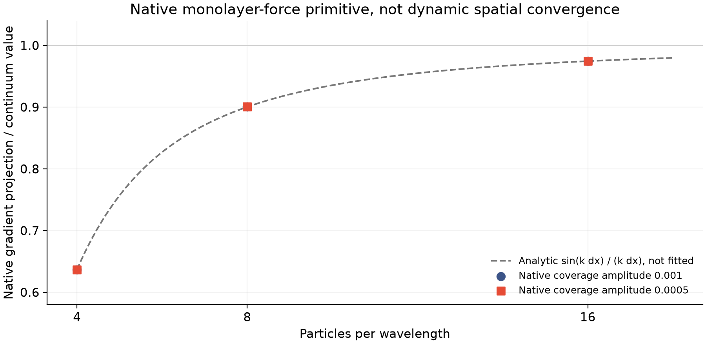

原生代码的组成核查 · 2026-11-13
回到实际代码，
先核对质量与表活力。
此前两个连续近似的响应不同。这次复用原生可执行程序，直接检查其中两个基础量是否与明确的 SI 计算对应。
实际执行了什么？
保留原生程序
使用未修改、未重编译的原始曲面能量探针；读取已冻结的平膜网格，加入两种很小的表活浓度起伏。节点位置、液量和零初速度保持原样。
用解析值独立核对
检查节点质量是否等于密度乘液量，表活力是否符合规则 Voronoi 网格的解析梯度响应；再把起伏幅度减半，检查线性化是否一致。
两种网格间距为 20、10 微米，波长 80、160 微米，表活相对幅度 0.001、0.0005；粒子数为 128、512。它们没有边缘浴液，不是主算例的 144／544 粒子轨迹。原生观察共耗时约 28.77 秒，没有训练或超过两小时的新任务。
分辨率会改变这一个力算子的响应

| 网格间距 | 波长 | 每波长粒子数 | 原生力／连续值 | 解析梯度比例 |
|---|---|---|---|---|
| 20 μm | 80 μm | 4 | 0.636627 | 0.636620 |
| 20 μm | 160 μm | 8 | 0.900332 | 0.900316 |
| 10 μm | 80 μm | 8 | 0.900332 | 0.900316 |
| 10 μm | 160 μm | 16 | 0.974512 | 0.974495 |
表格采用较小幅度 0.0005。八组原生力与解析比例的最大相对差异为 6.945e-05；四组幅度归一化配对均通过原定 0.2% 条件。
完成了哪一部分对应？
节点模态质量与 SI 体积计算的最大相对差异为 2.665e-15。节点梯度重新投影也复现了原生输出。由此，条件近似中的节点质量和初始表活力获得了部分原生代码依据。
还未对应的部分包括：节点究竟跟随界面还是体平均液体、黏性墙边界、相对排液、有限时间分裂、曲面边缘及完整动态响应。本次未将探针附带输出的 Hessian／有限差分列计为通过；自由膜参照原有两个未通过条件也继续保留。
原始文件全部保留，主计算继续
40 个原生输入、输出和日志，共 1.113 MB，已打包并实际恢复到独立目录，逐文件哈希一致。下载字节一致的原始数据 ZIP · 文件与恢复清单。
正在运行的 5 微米算例及其代码、材料、容差保持原样。待终态形成后，继续独立账本／机械功审计及时间、空间比较。真实局部通量／牵引力、交换系数、薄膜元厚度比、整体条纹与保留工况实验仍待完成；C2 没有引入拟合速率。
方程、全部检查与复现
事前计划和门槛 · 可执行程序、源码与输入哈希 · 原生命令、耗时和导入记录 · 八组质量与力核对 · 四组幅度配对 · 范围与总体状态 · 复现入口